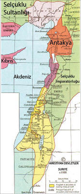

İsa, “Birbirinizi Sevin,” Demişti, Onlar Birbirlerini Boğazladılar!
Papaların, Hıristiyan âlemine önder oldukları iddiası, iddianın dayanağı Büyük Konstantin’in sahte vasiyetinin ortaya çıkmasından 400 yıl sonra Latin Kiliseler ile Greko Romen Kiliseleri boğaz boğaza getirmiş ve temelinde siyasal bir egemenlik olan din kavgası, artık devletlerarası savaşlara dönüşmüştü.
Çünkü İsa’nın yaşam ve söylemine dayalı Hıristiyanlık öğretisinin Latince ve Yunanca “mealleri” üzerinden yapılan kavga, daha önce de söylediğim gibi din üzerinden yürütülen ve dile odaklı bir siyasal egemenlik mücadelesiydi.
Büyük Konstantin’in sahte vasiyetine ilişkin kuşkular ve eleştirilerin ciddileşmeye başladığı 11. yüzyılda, Latin ve Greko Romen Hıristiyanlar, aynı zamanda zaten silahlarla da savaşıyorlardı.
Bu savaşlar, görünüşte Ortadoğu ve Anadolu’nun Hilal tarafından işgaline karşı düzenlenen Haçlı Seferleri’ydi ve 1095’ten 1270’e kadar sekiz sefere çıkıldı.
Latin Hıristiyan Haçlıları, bu seferlerin hemen hepsinde, İslam ordularına karşı zafer kazanmaktan çok Grek Hıristiyan topraklarını ele geçirdiler ve Doğu Roma İmparatorluğunu talan ettiler.
Burada durup, Büyük Konstantin’in vasiyetinin sahteliği tartışılmaya başlandığı yıllarda düzenlenen ve dünyadaki uygarlık dengelerini değiştiren Haçlı Seferleri’ne bir göz atmamız gerekiyor.
Çünkü İslamiyet’in Ortadoğu ve Anadolu’da yayılmasını asla önleyemeyen, çoğu yerde Türk, bazen de Kürt ya da Arap komutasındaki Müslüman orduları önünde hezimetle sonuçlanan Haçlı Seferleri, çok tuhaf bir zaferle sonuçlandı:
Hemen tüm dinlerin doğduğu, dolayısıyla hak iddia ettiği “Kutsal Topraklar”da askerî anlamda perişan olan Haçlılar, talan ettikleri Konstantinopolis ve Doğu Roma’dan Hıristiyan kültürünün temel eserleriyle birlikte muazzam bir bilgi birikimi alıp getirdiler Avrupa’ya.
Keza, Arap Yarımadası’ndan da pozitif bilimler açısından bilmedikleri pek çok yenilik ve buluşla döndüler. Arap Yarımadası ve Güney Anadolu’da kazandıkları topraklarda, ileride dünyaya açıla-

Latin Haçlı Devletleri, Kudüs/Trablus/Antakya (MS 110)
cakları ticaret üsleri olacak Latin Hıristiyan devletlerini kurarken, uğradıkları hezimetlerden ders çıkarıp yepyeni askerî teknikler, hatta yeni silahlar yaratmayı başardılar.
Latin Haçlı Seferleri’nden sonra, Batı Avrupa bilgilenme ve aydınlanma çağına girdi, dünya ticaretinde söz sahibi oldu, bugünkü Batı uygarlığının temelleri atıldı.
Oysa başlangıçta, ne Haçlı orduları bu amaçla kurulmuş, ne de seferlerden böyle bir “yan etki” sonucu beklenmişti.